5 минут
Запись
Оставьте номер, и администратор перезвонит за 5 минут, подберёт врача и время. С острой болью примем в тот же день.
Хирург, ортопед и терапевт смотрят ваш случай вместе. Цену плана записываем в договор.
Имплант Osstem 17 500 ₽ 26 500 ₽
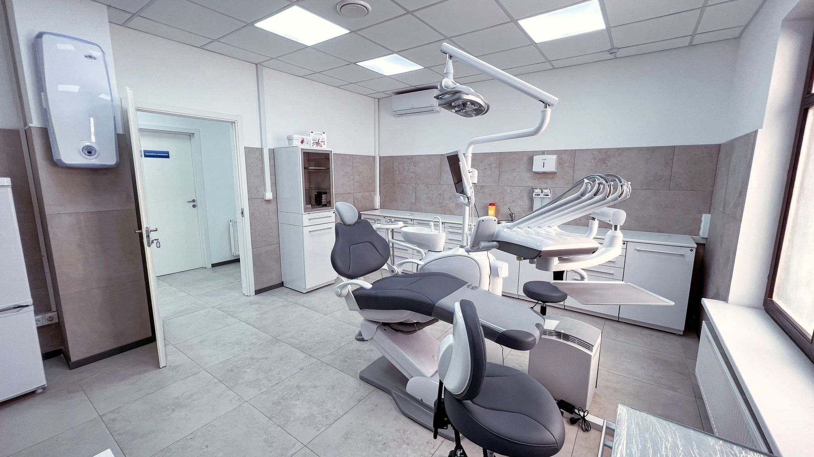
Свой 3D-томограф Vatech, панорамный рентген и визиограф: снимки делаем на месте. Отдельная стерилизационная. По соседству, на Громова, 10, наша многопрофильная клиника: анализы перед имплантацией сдаёте рядом.
Построить маршрутСвой 3D-томограф Vatech, панорамный рентген и визиограф: снимки делаем на месте. Отдельная стерилизационная. По соседству, на Громова, 10, наша многопрофильная клиника: анализы перед имплантацией сдаёте рядом.
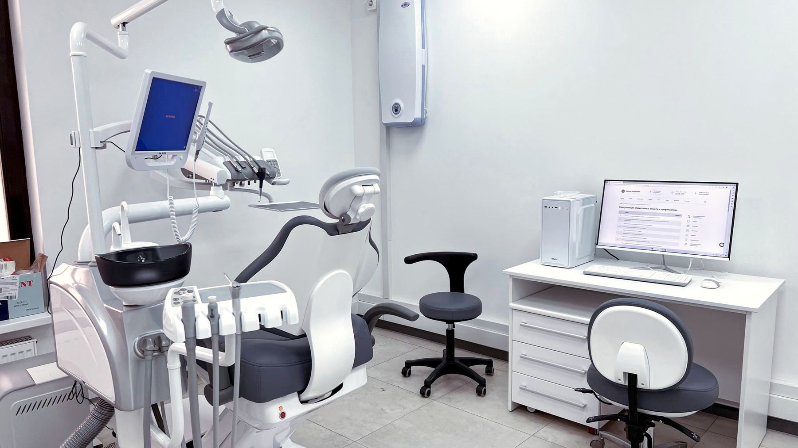
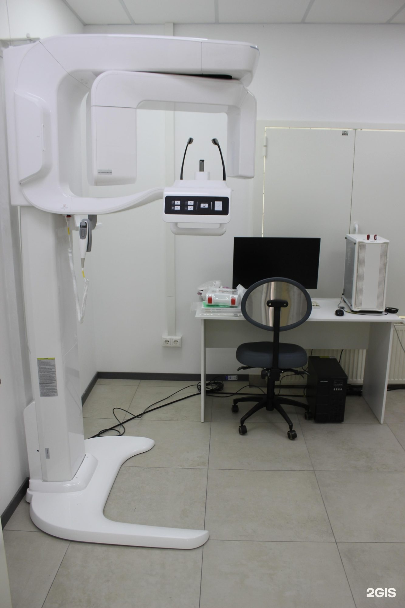
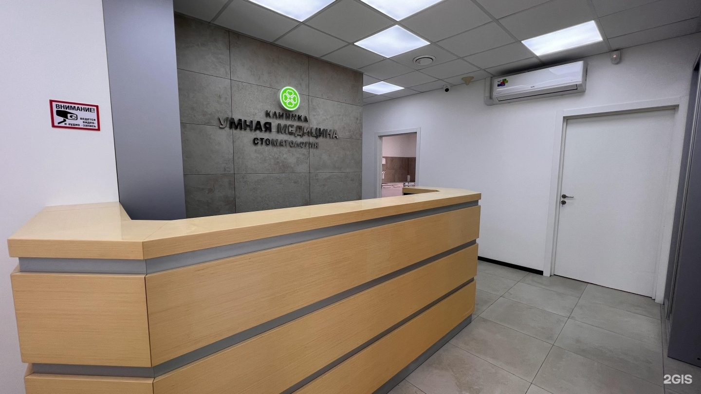
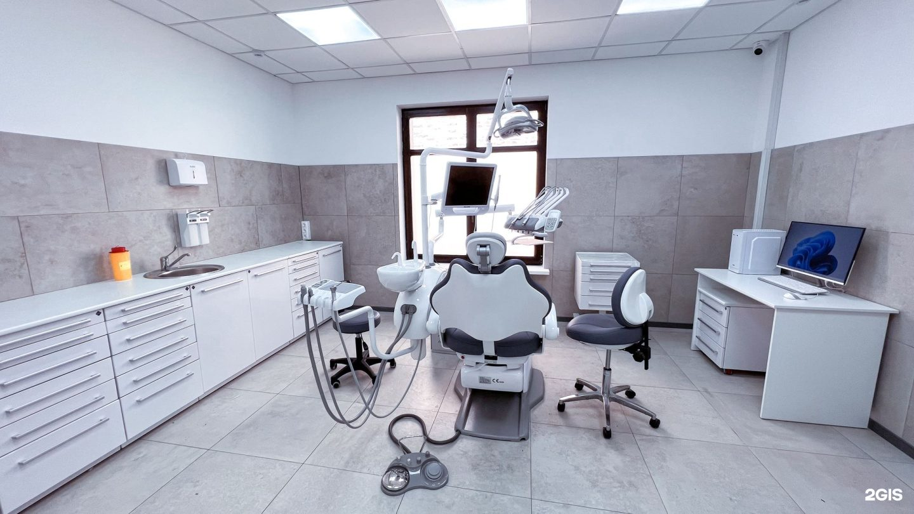
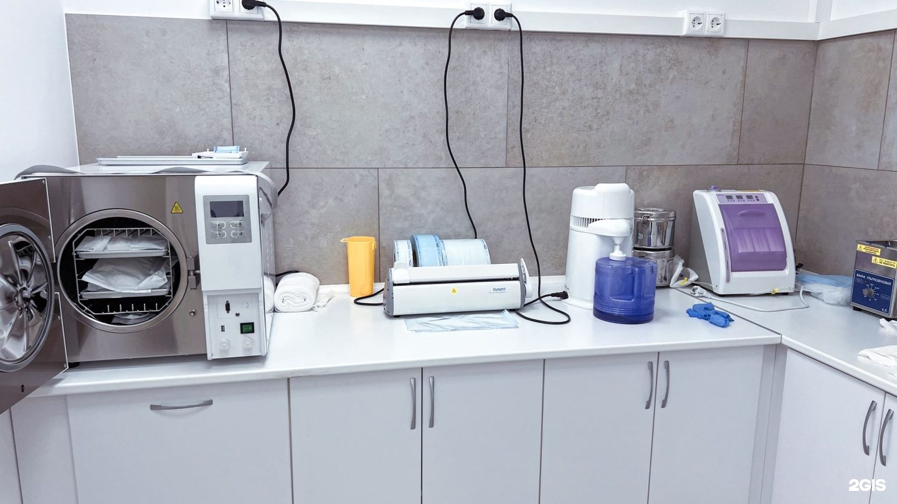
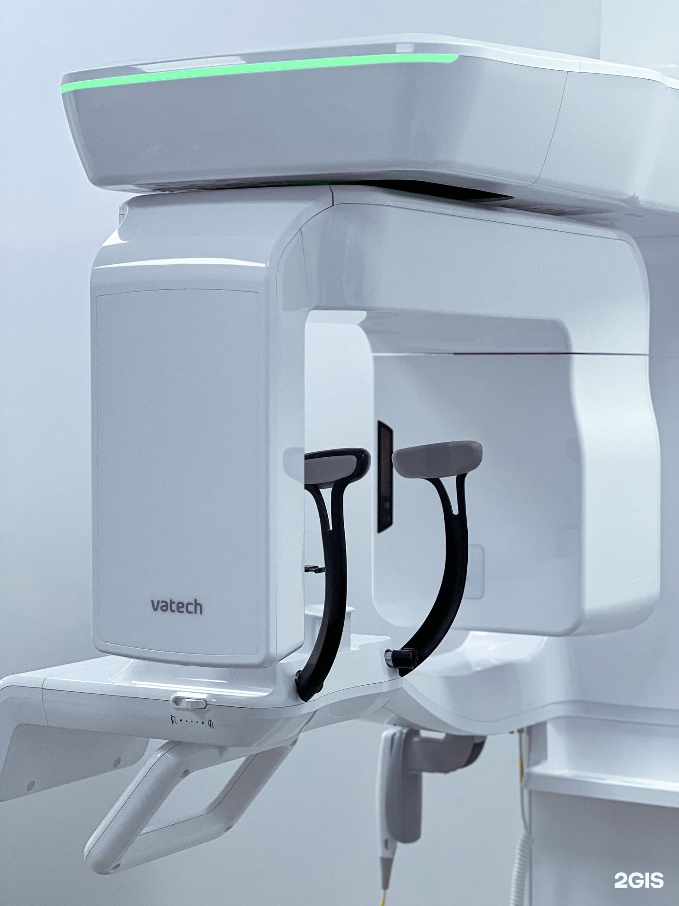
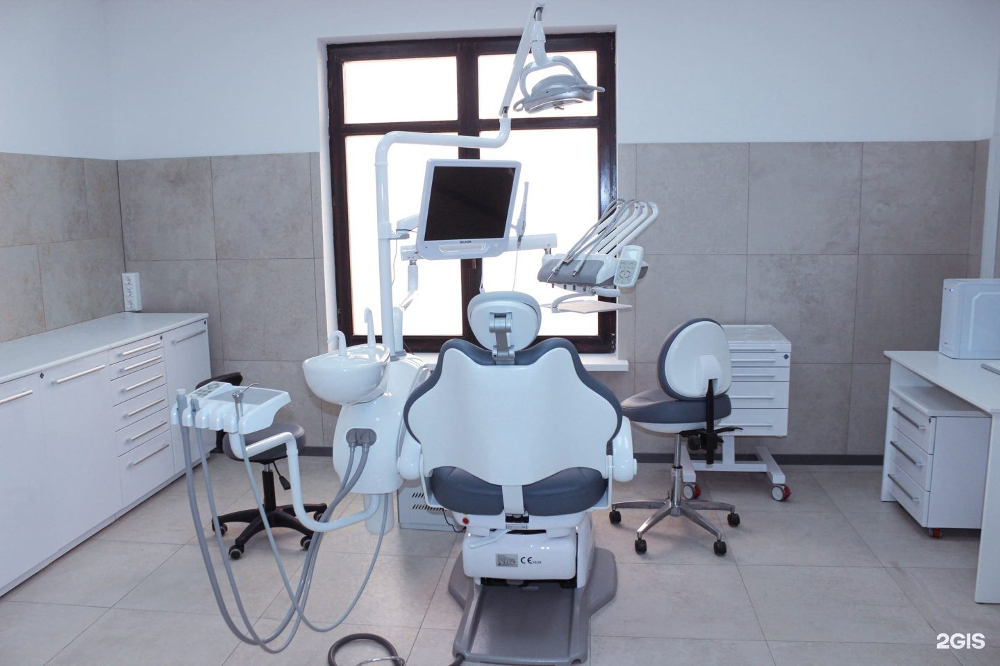
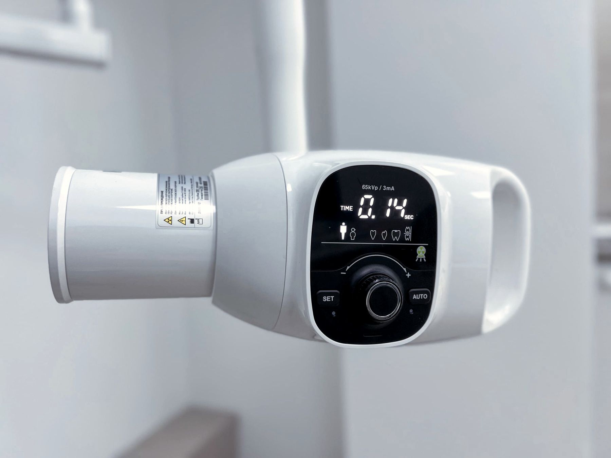
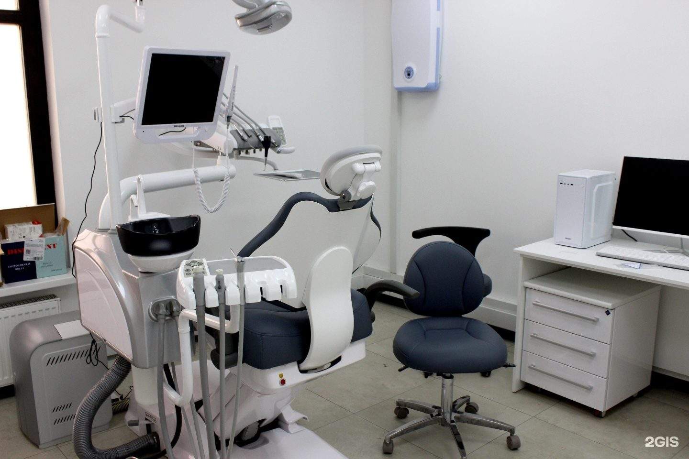

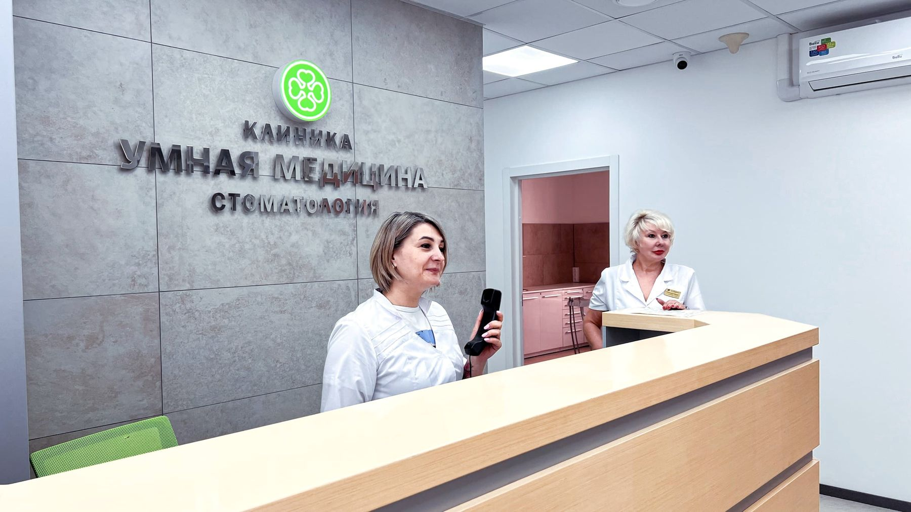
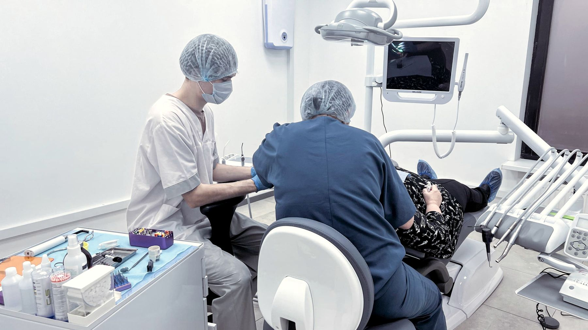
Свой 3D-томограф Vatech, панорамный рентген и визиограф: снимки делаем на месте. Отдельная стерилизационная. По соседству, на Громова, 10, наша многопрофильная клиника: анализы перед имплантацией сдаёте рядом.
Построить маршрутПять этапов. На каждом понятно, что будет дальше и сколько это стоит.
Оставьте номер, и администратор перезвонит за 5 минут, подберёт врача и время. С острой болью примем в тот же день.
Осмотр и план лечения бесплатно. Если нужен снимок, сделаем его здесь же: прицельный, панораму или КТ на своём томографе Vatech.
Сложный случай хирург, ортопед и терапевт разбирают вместе и предлагают два-три варианта плана с разной ценой. План можно забрать домой и подумать.
Цену выбранного плана записываем в договор, скрытых платежей нет. При оплате в день консультации скидка 10%, можно платить по этапам, в рассрочку или в кредит.
Куратор ведёт вас от первого визита до последнего. Сроки гарантии записаны в договоре: если в этот срок пломба или коронка выпадет, переделаем бесплатно. На имплант выдаём паспорт.
Перезвоним за 5 минут. Консультация ни к чему не обязывает.
Записаться на бесплатную консультациюКариес, пульпит и периодонтит. Сложные и ранее леченные каналы лечим под микроскопом с увеличением от 25 до 40 раз.
Импланты Osstem, Dentium, Straumann и Riellen's. Положение импланта планируем на 3D-модели по КТ и ставим по хирургическому шаблону. Если кости мало, наращиваем.
Коронки и протезы на зубы и на импланты. Ортопедами руководит главный врач Евгений Солодухин. В клинике есть интраоральное 3D-сканирование.
Простые и сложные удаления, зубы мудрости, ретинированные зубы пьезоскальпелем. С острой болью примем в день обращения.
Снятие камня и налёта, Air-Flow и полировка. Если дёсны чувствительные, чистку сделаем с анестезией.
Отдельный детский кабинет и детский стоматолог Даниил Троицкий. Лечим молочные зубы, покрываем фтор-лаком, герметизируем фиссуры.
Металлические, самолигирующие и керамические брекеты, элайнеры. Для детей пластинки и аппараты Haas, Hyrax, Twin-block.
Свой 3D-томограф Vatech, панорамный рентген и визиограф. Снимки делаем на месте, никуда ехать не нужно.
Восемь врачей. Команду ведёт главный врач, ортопед Евгений Солодухин: более 20 лет практики и более 3 000 протезов.
Главный врач, ортопед
Протезирование и восстановление зубов, протезы на имплантах
Записаться к врачуХирург, имплантолог
Имплантация, удаление зубов и подготовка к имплантации
Записаться к врачуХирург, имплантолог
Удаление зубов и имплантация, хирургия в сложных случаях
Записаться к врачуТерапевт, эндодонтист, гигиенист
Лечение кариеса и каналов, сохранение зубов
Записаться к врачуТерапевт, ортодонт, гигиенист
Эстетическая реставрация и прикус
Записаться к врачуОртопед
Восстановление зубов и протезирование, эстетичные коронки
Записаться к врачуОртодонт
Брекеты и элайнеры, работа с прикусом
Записаться к врачуДетский стоматолог
Дети, профилактика и лечение детских зубов
Записаться к врачуСредняя оценка клиники на Яндекс Картах, ПроДокторов и 2ГИС
Мы ценим доверие наших пациентов и благодарны за каждое мнение.
Рейтинг 4,9 и 199 отзывов на ПроДокторов«Подписали договор, зафиксировали стоимость и начинаем лечение»
«Обошла несколько стоматологий в Раменском (и не только), везде хотели удалить, только тут взялись за лечение»
«Прием всегда вовремя начинается»
«Хлудневский М. С. - хирург золотые руки, очень внимательный, чуткий, аккуратный.»
«я очень боялся имплантации, но врач настолько все хорошо объяснил, что страха не осталось»
«Ходим в эту стоматологию всей семьей, очень довольны результатом»
«Пришел в клинику с острой болью, быстро приняли, сделали снимок, удалили зуб.»
«Был персональный куратор лечения, который помогал и решал все вопросы по лечению»
«Сын очень боялся стоматологов (предыдущий опыт в гос. клинике был очень плачевный)»
«снимок могут сделать на месте, не отправляя никуда»
«Операция прошла безболезненно, все очень комфортно. Теперь я с новыми зубами!»
«Прекрасно всё: от встречи пациента администраторами до самого лечения специалистами. Любые вопросы решают быстро и качественно.»
«Доктор посмотрел полость рта, все рассказал, показал и легким движением руки удалил зуб.»
«И кстати, ни разу не пришлось ждать, всегда приём вовремя. Цены очень даже приемлемые!»
«Очень боялась операции, но прошло все замечательно. Меня вели два доктора: хирург Хлудневский Михаил Сергеевич и ортопед Солодухин Евгений Викторович.»
«Сделала профгигиену, всё очень профессионально. Чисто, аккуратно и быстро.»
«Зуб удалили аккуратно и безболезненно, несмотря на то, что зуб тяжело удалять.»
«Все моё лечение прошло безболезненно благодаря этим прекрасным докторам.»
«Обошла несколько стоматологий в Раменском (и не только), везде хотели удалить, только тут взялись за лечение»
«Очень боялась операции, но прошло все замечательно. Меня вели два доктора: хирург Хлудневский Михаил Сергеевич и ортопед Солодухин Евгений Викторович.»
«я очень боялся имплантации, но врач настолько все хорошо объяснил, что страха не осталось»
«Хлудневский М. С. - хирург золотые руки, очень внимательный, чуткий, аккуратный.»
«И кстати, ни разу не пришлось ждать, всегда приём вовремя. Цены очень даже приемлемые!»
«Операция прошла безболезненно, все очень комфортно. Теперь я с новыми зубами!»
«Ходим в эту стоматологию всей семьей, очень довольны результатом»
«Был персональный куратор лечения, который помогал и решал все вопросы по лечению»
«Прекрасно всё: от встречи пациента администраторами до самого лечения специалистами. Любые вопросы решают быстро и качественно.»
«Подписали договор, зафиксировали стоимость и начинаем лечение»
«Прием всегда вовремя начинается»
«Пришел в клинику с острой болью, быстро приняли, сделали снимок, удалили зуб.»
«снимок могут сделать на месте, не отправляя никуда»
«Доктор посмотрел полость рта, все рассказал, показал и легким движением руки удалил зуб.»
«Сделала профгигиену, всё очень профессионально. Чисто, аккуратно и быстро.»
«Зуб удалили аккуратно и безболезненно, несмотря на то, что зуб тяжело удалять.»
«Все моё лечение прошло безболезненно благодаря этим прекрасным докторам.»
«Сын очень боялся стоматологов (предыдущий опыт в гос. клинике был очень плачевный)»
Стартовые цены есть в услугах выше: лечение кариеса от 4 000 ₽, простое удаление зуба от 2 100 ₽, металлокерамическая коронка от 26 400 ₽. Точную цену врач назовёт на бесплатной консультации после осмотра и снимка. Эта цена войдёт в план лечения и в договор.
Да. Консультация терапевта, хирурга, имплантолога или ортопеда с планом лечения бесплатна и ни к чему не обязывает: план с этапами, материалами и ценой можно забрать домой и подумать. Консультация ортодонта стоит от 1 700 ₽, детского стоматолога от 2 500 ₽.
Цену выбранного плана записываем в договор, скрытых платежей нет. Если врач увидит то, чего не было видно на снимке, он сначала скажет вам и назовёт цену, а продолжит только с вашего согласия.
Да. Дорогое лечение можно оплачивать по этапам, есть рассрочка и кредит. Можно вернуть 13% налоговым вычетом, документы для налоговой выдаём в клинике.
Сроки гарантии записаны в договоре: если в этот срок пломба или коронка выпадет или сломается, переделаем бесплатно. Ставим только оригинальные импланты с сертификатами и на каждый выдаём паспорт.
Да, с острой болью принимаем в день обращения, ежедневно с 9:00 до 21:00. Позвоните +7 495 150-36-15 или оставьте номер, перезвоним за 5 минут.
Лечим и удаляем зубы с обезболиванием, хирурги работают препаратами «Скандонест», «Ультракаин», «Убистезин» и «Артикаин». Если дёсны чувствительные, скажите, и даже чистку сделаем с анестезией.
Часто да. Чаще всего зуб удаляют из-за плохо пролеченных каналов: под микроскопом с увеличением от 25 до 40 раз врач находит пропущенный канал, пролечивает его заново и при необходимости закрывает перфорацию. Если сохранить зуб нельзя, врач скажет прямо и покажет причину на снимке.
Да, это бесплатно. Пришлите КТ, панораму, прицельный снимок или фото плана лечения из другой клиники, врач посмотрит и ответит в течение рабочего дня.
По акции имплант Osstem стоит 17 500 ₽ вместо 26 500 ₽, металлокерамическая коронка на имплант от 27 400 ₽. Итог зависит от системы импланта, коронки и того, нужно ли наращивать кость. Точную сумму врач назовёт после осмотра и КТ и запишет в договор.
Имплант ставят под местной анестезией, установка занимает в среднем от 10 до 30 минут, швы снимают через 10 дней. Коронку ставят примерно через 2 месяца на нижней челюсти и через 4 на верхней.
Кость можно нарастить. Пластика костными блоками стоит от 55 000 ₽ вместе с материалом и анестезией, закрытый синус-лифтинг от 22 000 ₽. Что подойдёт именно вам, хирург скажет по КТ.
All-on-4 по акции на имплантах Osstem от 110 000 ₽ вместо 129 000 ₽, All-on-6 от 166 100 ₽. Подойдёт ли метод, покажет КТ, а на бесплатной консультации вас вместе осмотрят хирург, ортопед и терапевт.
Нужны КТ и предоперационный комплекс анализов крови, а при общих заболеваниях может понадобиться заключение лечащего врача. КТ делаем в стоматологии, анализы сдаёте в соседнем здании, в нашей многопрофильной клинике на Громова, 10. Там же принимают терапевт, кардиолог и эндокринолог.
В часы работы перезвоним за 5 минут. Работаем ежедневно с 9:00 до 21:00, в субботу и воскресенье тоже. Если оставили заявку после 21:00, перезвоним утром с 9:00.
Если есть снимки или план лечения из другой клиники, возьмите их: КТ или панораму на диске или файлом. Если снимков нет, сделаем их здесь же: прицельный, панораму или КТ на своём томографе Vatech.
Да, в клинике отдельный детский кабинет и детский стоматолог Даниил Троицкий. Консультация с планом лечения и профосмотр со справкой для сада или школы стоят от 2 500 ₽. Можем записать вас и ребёнка на одно время: пока он у своего врача, вы у своего.
Мы в Удельной, на ул. Громова, 10/2, в 5 минутах от Жуковского. К нам ездят из Раменского, Быкова, Ильинского, Красково, Малаховки и Островцов. Кнопки «Маршрут» в контактах ниже откроют дорогу в Яндекс Картах или 2ГИС.
Пришлите снимок заранее: врач посмотрит его до визита и ответит в течение рабочего дня. КТ делаем на месте на своём томографе Vatech, а анализы перед имплантацией сдаёте рядом, на Громова, 10. Мы работаем ежедневно с 9:00 до 21:00, так что приехать можно вечером или в выходной.
Да, у клиники своя парковка у входа. Стоматология на Громова, 10/2, по соседству с нашей многопрофильной клиникой на Громова, 10.
Позвоните +7 495 150-36-15 или оставьте номер, перезвоним за 5 минут.
пгт Удельная, Раменский округ. 5 минут от Жуковского.
Ежедневно с 9:00 до 21:00
+7 495 150-36-15К нам ездят из Жуковского, Раменского, Быкова, Ильинского, Красково, Малаховки, Островцов, Люберец и Балашихи.
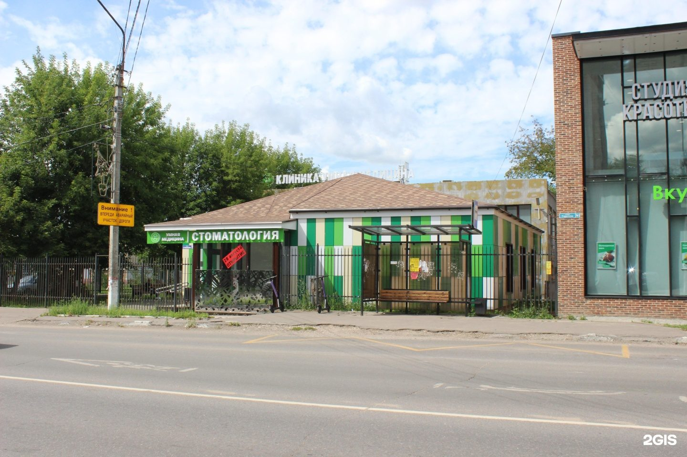
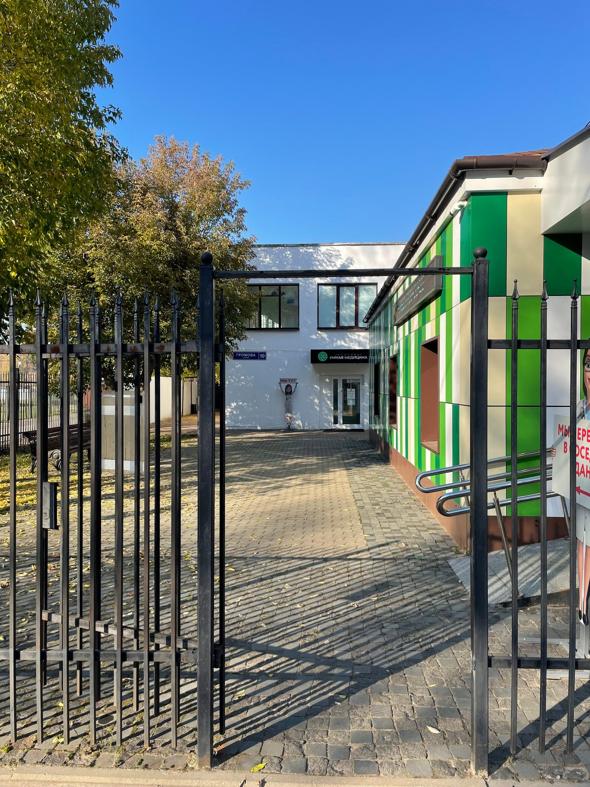
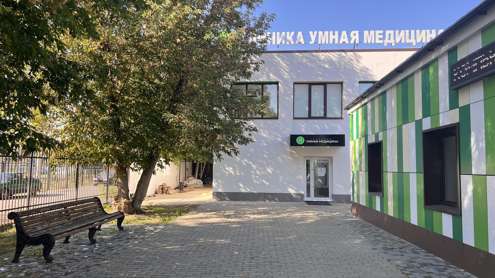
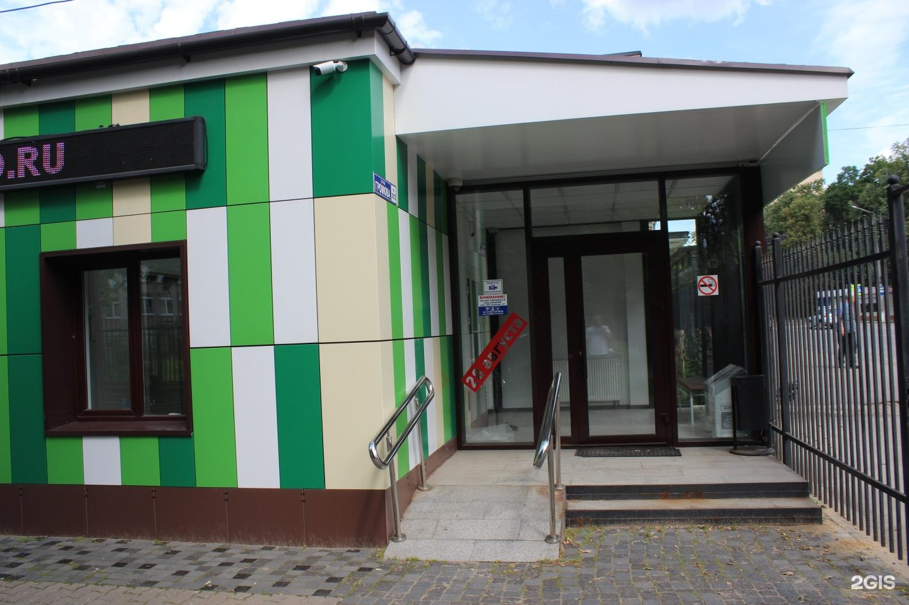
У дороги одноэтажное здание с вывеской «Стоматология».
Осмотр, 3D-томограф Vatech, панорамный рентген и визиограф: снимки делаем на месте, никуда ехать не нужно. После диагностики врач составит план лечения с ценой, его можно забрать домой.
Врач посмотрит ваш снимок Бесплатно
Пришлите КТ, панораму или план из другой клиники. Ответим в течение рабочего дня.
Бесплатно
от 500 ₽
от 1 700 ₽
от 2 000 ₽
от 4 500 ₽
от 2 200 ₽
Стартовые цены. Точную стоимость врач назовёт после осмотра.
Вместо импланта под каждый зуб в кость ставят 4 или 6 имплантов и фиксируют на них протез. Метод подходит пожилым пациентам и тем, кто хочет восстановить зубы быстро и с меньшими затратами.
Вся челюсть на имплантах от 110 000 ₽ 129 000 ₽
All-on-4 на имплантах Osstem. Хирург, ортопед и терапевт осмотрят вас вместе, консультация бесплатная.
от 110 000 ₽ 129 000 ₽
от 166 100 ₽
Бесплатно
Стартовые цены. Точную стоимость врач назовёт после осмотра.
Импланты Osstem, Dentium, Straumann и Riellen's. Положение импланта планируем на 3D-модели по КТ и ставим по хирургическому шаблону. Если кости мало, наращиваем.
Имплант Osstem 17 500 ₽ 26 500 ₽
Положение импланта планируем на 3D-модели по КТ и ставим по хирургическому шаблону.
17 500 ₽ 26 500 ₽
от 19 300 ₽
от 27 400 ₽
от 22 000 ₽
Бесплатно
Стартовые цены. Точную стоимость врач назовёт после осмотра.
Коронки и протезы на зубы и на импланты. Ортопедами руководит главный врач Евгений Солодухин. В клинике есть интраоральное 3D-сканирование.
Скидка на протезирование −10%
Скидка при оплате лечения в день консультации. Можно платить по этапам, в рассрочку или в кредит.
от 26 400 ₽
от 34 100 ₽
от 34 100 ₽
от 31 900 ₽
от 58 300 ₽
Бесплатно
Стартовые цены. Точную стоимость врач назовёт после осмотра.
Микроскоп увеличивает в 25–40 раз: врач находит скрытые каналы и трещины, перелечивает каналы и закрывает перфорации. Так удаётся сохранить зубы, которые в других клиниках предлагают удалить.
Скидка на лечение −10%
Скидка при оплате лечения в день консультации.
Цена после осмотра
от 11 000 ₽
от 20 000 ₽
Бесплатно
Стартовые цены. Точную стоимость врач назовёт после осмотра.
Кариес, пульпит и периодонтит. Сложные и ранее леченные каналы лечим под микроскопом с увеличением от 25 до 40 раз.
Скидка на лечение −10%
Скидка при оплате лечения в день консультации.
от 4 000 ₽
от 11 000 ₽
от 20 000 ₽
от 8 550 ₽
от 15 000 ₽
Бесплатно
Стартовые цены. Точную стоимость врач назовёт после осмотра.
Простые и сложные удаления, зубы мудрости, ретинированные зубы пьезоскальпелем. С острой болью примем в день обращения.
Примем в день обращения
Ежедневно с 9:00 до 21:00. Позвоните или оставьте номер, перезвоним за 5 минут.
от 2 100 ₽
от 3 950 ₽
от 4 400 ₽
от 10 890 ₽
Бесплатно
Стартовые цены. Точную стоимость врач назовёт после осмотра.
Металлические, самолигирующие и керамические брекеты, элайнеры. Для детей пластинки и аппараты Haas, Hyrax, Twin-block.
Скидка на брекеты и элайнеры −10%
Скидка при оплате лечения в день консультации. Есть рассрочка.
от 1 700 ₽
от 28 500 ₽
от 32 570 ₽
от 50 500 ₽
от 215 000 ₽
Стартовые цены. Точную стоимость врач назовёт после осмотра.
Отдельный детский кабинет и детский стоматолог Даниил Троицкий. Лечим молочные зубы, покрываем фтор-лаком, герметизируем фиссуры.
Сертификат смелости
Запишем вас и ребёнка на одно время: пока он у своего врача, вы у своего.
от 2 500 ₽
от 7 000 ₽
от 1 600 ₽
от 450 ₽
от 26 800 ₽
Стартовые цены. Точную стоимость врач назовёт после осмотра.
Снятие камня и налёта, Air-Flow и полировка. Если дёсны чувствительные, чистку сделаем с анестезией.
Профгигиена Air-Flow 4 500 ₽ 5 790 ₽
Места на среду ограничены.
4 500 ₽ 5 790 ₽
от 5 790 ₽
от 6 300 ₽
от 6 500 ₽
от 5 100 ₽
Стартовые цены. Точную стоимость врач назовёт после осмотра.
Перезвоним за 5 минут, подберём врача и удобное время.
Оставьте номер, администратор перезвонит и ответит на вопросы.
Подойдёт КТ, панорама, прицельный снимок или фото плана лечения из другой клиники. Врач посмотрит и ответит в течение рабочего дня. Это бесплатно.
Хирург, ортопед и терапевт осмотрят вас вместе, сделаем КТ. Консультация бесплатная, стоимость лечения врач назовёт после осмотра.
Консультацию ведут вместе
 ХирургМихаил
ХирургМихаилПервый визит бесплатно
Хирург, ортопед и терапевт посмотрят ваш случай вместе и предложат два-три варианта с ценой. Оставьте номер, администратор перезвонит и подберёт время.
Скидка 10% на лечение, если оплатить его в день консультации
Перезвоним за 5 минут, ежедневно с 9:00 до 21:00. Отправляя заявку, вы соглашаетесь на обработку персональных данных.